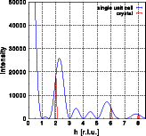
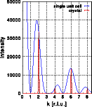
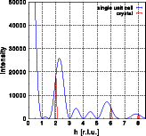
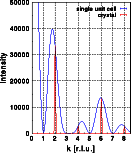

Modification I: Original structure

Modification
Original structure
Shifting an atom
Expanding the lattice
Goto
Contents

| Atom | Position x | Position y | Position z | Color in picture |
| Na | 0.10 | 0.20 | 0.30 | blue |
| K | 0.45 | 0.33 | 0.05 | red |
| Li | 0.15 | 0.63 | 0.65 | green |
| O | 0.25 | 0.25 | 0.25 | violet |
| O | 0.05 | 0.85 | 0.75 | yellow |
The following pictures show the Fourier transform of a single unit cell and the intensity distribution of a crystal. The left picture shows the hk0 layer of reciprocal space. The image corresponds to the Fourier transform of a single unit cell. The intensity distribution of the crystal is shown as blue dots marking the Bragg reflections. The next two images show the intensity along the lines from 0,0,0 to 8.5,0,0 and from 0,0,0 to 0,8.5,0. Note that the intensity is zero at all integer h00, h=2n+1 and 0k0, k=2n+1. Additionally, the intensity at 0,4,0 is (almost) zero as well. The blue curve is again the Fourier transform of a single unit cell and the red line is the Fourier transform of the crystal. The vertical scale has been cut off at approximately 40% of the intensity at 0,0,0. Click on the pictures to get a full screen image.
 



The students can learn the following based on the observations made so far:
- The Fourier transform of a unit cell is a continuous function in reciprocal space
- The systematic extinctions of the space group are found in the Fourier transform of a single unit cell. For hk0 reflections in space group Pnnn the extinction rule h+k = 2n holds. At all sites with h+k = 2n+1 the observed intensity in the image is zero.
- Other reflections may have zero (or almost zero) intensity as well. All reflections with h=4 for example have almost zero intensity. This is not caused by crystallographic symmetry operations but rather by the distribution of atoms in the specific structure. The amplitudes of the X-rays scattered by all atoms in the unit cell add up to zero.
- The position of Bragg reflections does not necessarily coincide with a maximum of the Fourier transform of a single unit cell.